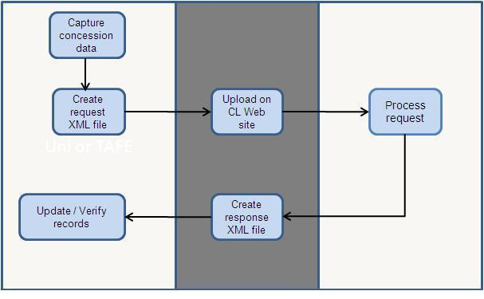

Overview
Banner® Centrelink Concession Card (CLCONC) provides information on procedures for producing Banner CLCONC validation files. It provides information on procedures and tables to allow the collection of student concession data and managing the facilitation of communications with Centrelink.
Refer to the Banner Student Localizations Online Help to know more information about the CLCONC pages.
CLCONC validation system
The Banner CLCONC validation system enables the collection of student concession data and the facilitation of communications with Centrelink. It verifies students are eligible for the concessions they are claiming.
The system is currently configured for use with Centrelink, however, the basic data capture facilities can be used for general concession recording or for concessions managed by other agencies.
- Collect data for student concessions, proof of eligibility, dates of confirmation of eligibility, and concession management
- Provide facilities for packaging data for transmission to Centrelink
- Provide facilities for interpreting data sent back by Centrelink
The typical process flow for CLCONC validation is shown in Figure 1.

Functions and features
CLCONC is made up of various steps and processes. These are organised as follows.
- Set up the CLCONC: Procedures and pages are used to define elements, values, and processes that are required to produce CLCONC extracts.
- Create the CLCONC XML request file: Extract and report generation procedures and pages are used to create and view the data snapshot and extract. This step has three stages, namely, snapshot process, extract process, and export process.
- Upload CLCONC response and rejection file: Procedures, file transformation tools, and pages are used to import and upload response and rejection files.
- View Data: The request file is viewed in XML format and concessions verified through the response file will be viewed in the Concession Details (SKACONC) page. Errors and rejected requests can be viewed through the standard Universal Viewer (GKAPUNV) page supplied with the Banner Mass Data Update Utility (MDUU).
For example, if your institution already records concession details in a custom table, the CLCONC request and response extracts can be remapped to refer to this custom table.
Processing data collection
This release provides data reporting and extract functionality to meet the needs of CLCONC.
The CLCONC module uses rule sets in the MDUU to generate the snapshot, extract, and export files for concession verification. Seed data is delivered to enable you to begin designing your concession verification processes.
To understand how the concession validation files are built, you must understand the process, task, and activity elements of MDUU. Refer to the Banner Mass Data Update Utility Use for a complete explanation of tasks and activities, and how these elements work to support CLCONC validation requirements.
Snapshot processing
Before the construction of the XML request file, the necessary concession data is extracted.
The snapshot process populates concession snapshot data from baseline tables, Solution Centre tables, locally developed tables, and tables from third-party applications. The process allows selected target tables in the snapshot data structure to be populated. It can refresh (remove and insert) or update (add new rows and update existing rows) the snapshot.
The structure of the snapshot tables is maintained by the MDUU under a schema called MDUUREP. (Refer to the Banner Mass Data Update Utility Use for more information).
When running the snapshot, you can select which snapshot tables to populate. You can also purge the selected snapshot tables before re-inserting rows.
- Create snapshot data
- Define the column mappings for the snapshot
- Define the rules to generate the snapshot population
- Initialise the snapshot
- Populate the snapshot
- Increment the snapshot (add or remove records without refreshing the snapshot from scratch).
Extract processing
After the initial concession data snapshot activity has taken place, it is transformed and organised before the production of the XML request file.
The extract process populates the extract based on snapshot data and, where necessary, it transforms the snapshot data into the format needed for the extract. The process allows selected target tables in the extract data structure to be populated. It can refresh (remove and insert) or update (add new rows and update existing rows) the extract.
- Create extract data
- Define the column mappings for the extract
- Define the rules to generate the extract population
- Use expressions and functions to derive values based on the contents of the snapshot
- Initialise the extract
- Populate the extract
- Increment the extract (add or remove records without refreshing the cohort from scratch).
Export processing
The final stage in generating a concession validation request is production of the XML request file.
The export process populates the export based on extract data. The process allows selected target tables in the export data structure to be populated. It can refresh (remove and insert) or update (add new rows and update existing rows) the export.
- Create export data
- Define the mappings for the CLOB export column
- Define the rules to generate the export population
- Initialise the export
- Populate the export
- Increment the export (add and remove records without refreshing the cohort from scratch)
- View the export.
File details
This section provides more information about the files generated and processed in the CLCONC system.
- Import files and extract data from them
- Define the mappings for the imported data columns
- Define the rules to generate the import population
- Initialise the import
- Populate the import
- Increment the import
- View the import
- Update baseline and ASC tables with the imported data.
Centrelink Customer eServices Request File
The following table describes the activities for this file.
| Activity Type | Activity Name | Description |
|---|---|---|
| Snapshot |
|
This activity pulls data from various Banner baseline and Australian Solution Centre (ASC) tables to populate the CCeS Validation Snapshot (SKRCSCV) table. The activity uses the PIDM and concession type as populate keys to ensure that the concession validation requests are for each concession type against which a student is claiming. |
| Extract |
|
This activity pulls data from the CCeS Validation Snapshot (SKRCSCV) table to populate the CCeS Validation Extract (SKRCECV) table. The activity uses the PIDM and concession type as populate keys. |
| Export |
|
This activity pulls data from the CCeS Validation Extract (SKRCECV) table, formats it as an XML file, and places it in the CCeS Validation Export SKRCXCV) table. |
Centrelink Customer eServices Response File
Centrelink returns a response file which indicates whether the student identified in the request file has been successfully matched in the Centrelink system. A response file does not guarantee that a student has been successfully matched, only that the request file was correctly formatted and all processing occurred without error.
About this task
The response files generated by Centrelink are stored in the Centrelink CCeS web site. To download the response file, which is in XML format, you can visit the Centrelink CCeS web site and log in using your Centrelink user name and password.
The following tasks are carried out after the response file has been retrieved.
Procedure
- Extract data from the XML document and place it into a text file (.txt) separated by a tilde (~) text file.
- Upload the response data to a temporary table for further processing, creating a row of data for each student.
- Inspect the response to determine whether the student has been validated by Centrelink or the DVA.
- Update the student's concession record if the student has been validated, including recording a validated status and a date of validation.
- Record the student as not validated on their concession record if Centrelink or the DVA have been unable to match them.
- Report processing errors to an error recording table where the request file was examined by Centrelink but a system or data error prevented full processing.
CCeS Rejection File
If the format of the request file is not valid or if the file encounters serious system errors, Centrelink will return a rejection file. This indicates that the request was not examined and has been returned unprocessed.
The rejection file contains a list of all the requests falling into this condition so that errors can be corrected and the request made again.
The rejection files generated by Centrelink are stored in the Centrelink CCeS web site. To download the response file which is in XML format, you can visit the Centrelink CCeS web site and log in using their Centrelink user name and password.
After the rejection file has been retrieved, the following tasks can be carried out.
- Extract data from the XML rejection file and place it into a tilde-separated (~) text file.
- Upload the file to a temporary table for further processing, identifying each student on a separate row.
- Identify the cause of the rejection, reporting all problems to the Error Reporting Table (SKRCSER).
Request file data export
The CLCONC data export process produces an XML request that can be uploaded to the Centrelink CCeS web site. The XML file is produced in accordance with and validates against Centrelink's CCeS request DTD. The file itself is stored as a field in the CCeS Validation Export (SKRCXCV) table.
You can view the fully formatted file using the Universal Viewer (GKAPUNV) form. You can also use GKAPUNV to extract this field and save it as an XML file, naming it in accordance with the Centrelink requirements. You can then log in to the Centrelink CCeS web site and upload the file to the CCesS site drop box using a web browser. No automated file transfer or integrations are required to complete the request file upload.
Prerequisites
The minimum required releases for CLCONC 8.1 upgrade are as follows.
- Banner General 8.3 or later
- Banner Student 8.3 or later
- Banner Mass Data Update Utility (MDUU) 8.0
- Banner CLCONC 8.0
- ASCGEN 8.3.1
- Banner General 8.4.1
- Banner Student 8.5.1
- Banner Mass Data Update Utility (MDUU) 8.0.1
- Banner CLCONC 8.0
- ASCGEN 8.3.1
Procedures
This section describes the procedures performed using Banner CLCONC.
Define system parameters
There are several elements where the selection of the correct data depends on specific Banner codes.
About this task
For example, to determine a student's address for confirmation purposes with Centrelink, the CLCONC system queries the baseline address tables using a hierarchy of address types, starting with the permanent residence. For example, if you have defined PR as this type, you would assign it as the first value for the residential address parameter.
To support inter connectivity between baseline codes and CLCONC elements, a predefined set of system parameters is delivered with CLCONC validation, and you must configure these parameters for use. You can modify the delivered parameters to meet your needs, or you can create new ones.
Only users with appropriate permissions can define or modify system parameters.
Procedure
Copy system parameters to another year
System parameters are associated with an academic year. You can copy one year's parameter definitions to another, then modify the new definition as desired. When you copy system parameter rules from one year to another, all rules are copied.
About this task
System parameter rules cannot be deleted if the system required indicator is checked but the parameter value can be updated to null. System parameter rules can be deleted after being copied to the new academic year if the system required indicator is not selected. You can copy rules forwards or backwards in time; the only restriction is that you cannot copy system parameter rules to an academic year that already has system parameter rules.
If you attempt to copy parameters to a year for which at least one parameter has already been defined, the system does not perform the copy and displays an error message.
Procedure
- Access the Report System Parameters (SKARSYS) page.
- Select Copy Rules to New Year.
- Enter the code of the academic year to be copied in the From Year field of the Copy Rules window.
- Enter the code of the academic year to which the definitions are to be copied in the To Year field.
- Select the Process Rule Copy button.
- If desired, modify the parameter definitions.
Build CLCONC data
The following procedure explains how to build student concession data.
Procedure
Results
Refer to CLCONC Online Help to know and read more information about forms.
Record Centrelink CCeS details
Use this procedure to capture and record CCeS user name data for an organisation.
Procedure
- Access the External Systems Interaction Control (SKASYSC) page.
- Go to the Centrelink window.
- Enter the organisation ID in the ID field.
- Enter the Centrelink CCeS details for the organisation ID entered.
- Save the record.
Processing of CLCONC data
Use this procedure to produce files for validation by Centrelink and to update student records on the basis of Centrelink responses.
You can control the execution of each process to run specific activities or tasks separately, or to run all tasks and activities one time in producing the request file. However, we recommend you run each task separately, evaluating the data each time. This results in better processing time and allows you to do any data cleaning. In the case of processing incoming data from response or rejection files, run the import activity before any other activity.
Refer to the Banner Mass Data Update Utility Use for more information about the forms used in configuring and executing each activity.
ASC_CCES_VALIDATION
This process is used to produce CLCONC XML request file. This process contains snapshot, extract, and export activities.
Procedure
ASC_CCES_IMPORT
The ASC_CCES_IMPORT process is used to treat incoming files generated by Centrelink's CCeS system in response to request files generated from data extracted from Banner. This process contains response, rejection, and verify activities.
Import response file
Use this procedure to import the response file generated by Centrelink.
Procedure
Import rejection file
Use this procedure to import the rejection file details generated by Centrelink.
Procedure
Process imported files
Use this procedure to process the imported files generated by Centrelink.
Procedure
Tables
The following tables are delivered for Banner CLCONC.
Concession Data (SKRCONC) table
Concession Data (SKRCONC) table stores all data relevant to a student's concession status. This table is added for the Concession Details (SKACONC) page.
Centrelink Customer eServices (CCeS) Control (SKBCCES) table
The Centrelink Customer eServices (CCeS) Control (SKBCCES) table establishes a valid and successful file transmission of Centrelink customer data to the CCeS web site.
System Parameters (SKARSYS) page
A set of default system parameters is delivered with the CLCONC module. These parameters are used to configure the CLCONC system. Use the Report System Parameters (SKARSYS) page to configure this data to the specifics of your implementation.
The following system parameters are available from the SKARSYS page.
POSTAL_ADDR_TYPE Records the hierarchy of address type codes used to identify a student's postal address for reporting.
RESIDENTIAL_ADDR_TYPE Records the hierarchy of address type codes used to identify a student's residential address for reporting.